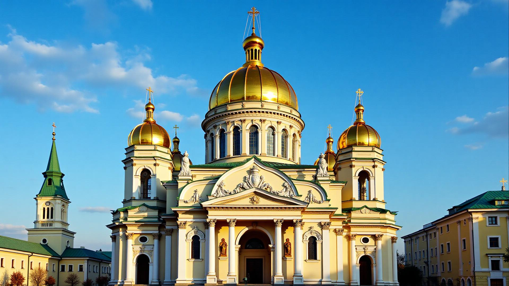
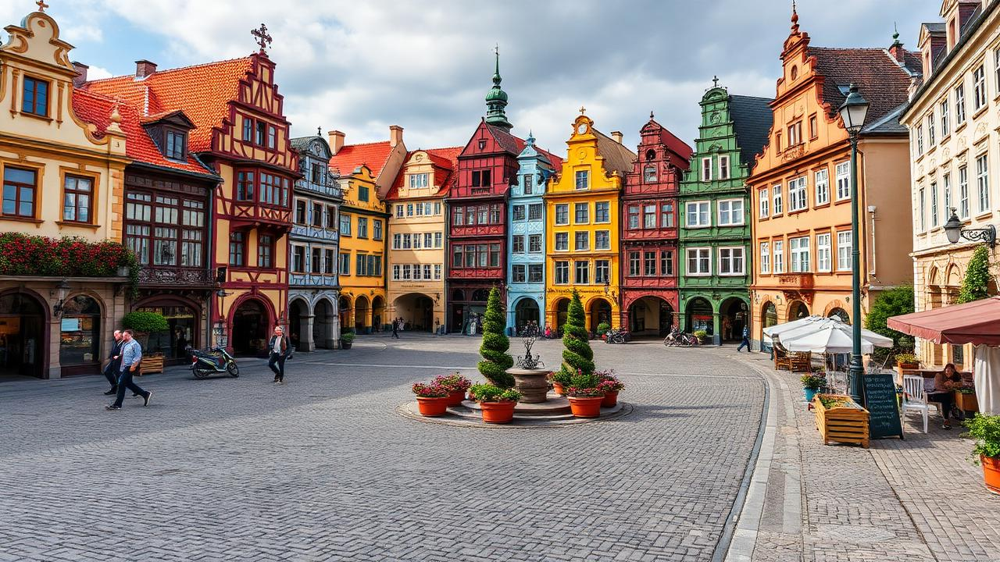
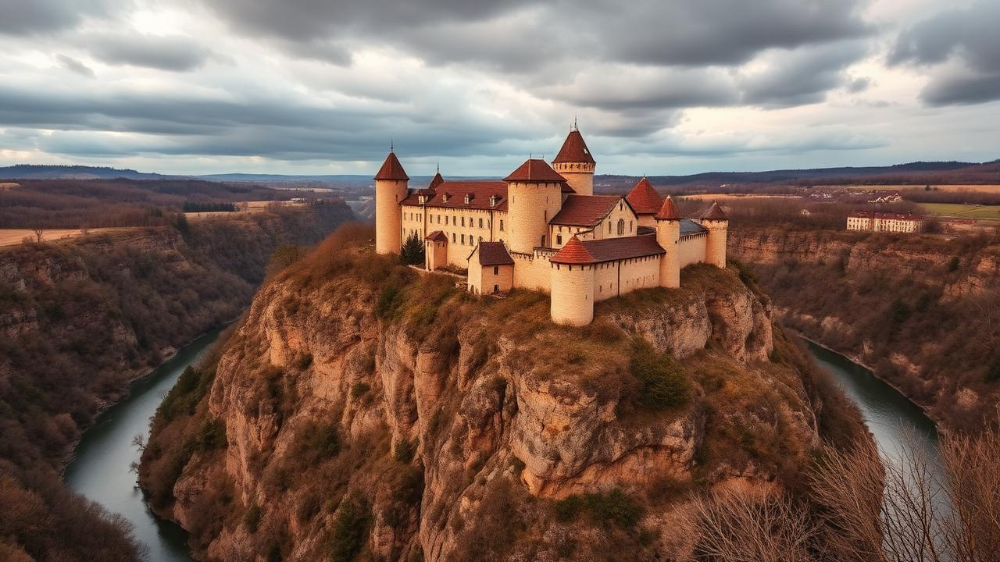
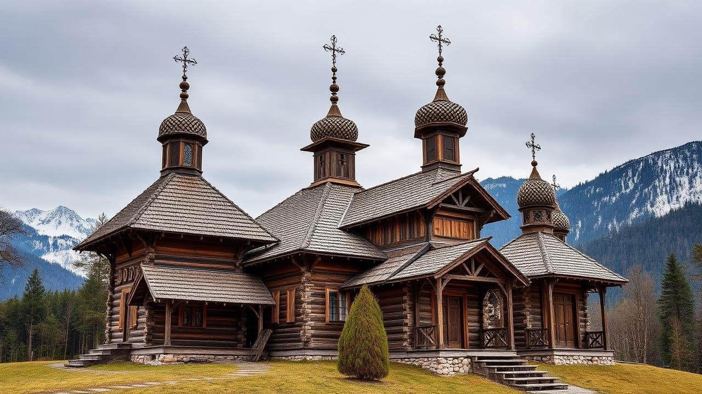

Українська архітектура
Архітектура України — це унікальне поєднання різноманітних стилів та епох, що відображають багату історію та культурну спадщину нашої країни. Від величних давньоруських соборів до вишуканих бароко-рокайльних палаців, кожна споруда розповідає свою неповторну історію.
Політичні та історичні події суттєво вплинули на розвиток архітектурних традицій, створюючи унікальне обличчя українського мистецтва.
Визначні пам'ятки

Софійський собор
Період: XI століття (1037 р.)
Найвидатніша пам'ятка давньоруської архітектури. Збудована за часів Ярослава Мудрого як головний храм Київської Русі.

Площа Ринок у Львові
Період: XIV-XIX століття
Історичний центр Львова — ансамбль ренесансно-барокової архітектури, внесений до списку Всесвітньої спадщини ЮНЕСКО.

Кам'янець-Подільська фортеця
Період: XI-XVIII століття
Унікальна оборонна споруда, що органічно поєднує різні архітектурні стилі та була свідком численних історичних подій.
Класифікація архітектурних стилів України
| Період | Стиль | Характерні риси | Приклади |
|---|---|---|---|
| X-XIII ст. | Давньоруський | Хрестово-купольні храми, цегляне будівництво, фрески | Софійський собор (Київ), Михайлівський собор |
| XIV-XVI ст. | Готика | Стрілчасті арки, витончені вежі, вітражі | Луцький замок, Львівська ратуша |
| XVI-XVII ст. | Ренесанс | Симетрія, пропорції, класичні ордери | Жовківський замок, Будинок Корнякта |
| XVII-XVIII ст. | Бароко | Динамічність, багатий декор, ілюзорність | Андріївська церква, Маріїнський палац |
| XI-XVIII ст. | Оборонний | Фортеці, замки, міцні стіни, бастіони | Кам'янець-Подільська фортеця, Хотинський замок |
Історичні періоди розвитку
- Давньоруська держава (IX-XIII ст.)
- Литовсько-польський період (XIV-XVI ст.)
- Козацька доба (XVI-XVIII ст.)
- Період Російської імперії (XVIII-XX ст.)
- Радянський період (1920-1991 рр.)
- Сучасна незалежна Україна (з 1991 р.)
Політичні чинники впливу
- Християнізація Русі та візантійський вплив
- Монгольська навала та руйнування
- Польсько-литовське панування
- Козацькі повстання та автономія
- Російська імперська політика уніфікації
- Радянська індустріалізація та типізація

Дерев'яні церкви Карпат
Особливе місце в українській архітектурі посідають дерев'яні церкви Карпатського регіону — унікальні споруди, що втілюють традиції народного зодчества та демонструють високу майстерність українських будівничих.
Ці храми характеризуються багатоярусною структурою, вишуканими пропорціями та гармонійним поєднанням з навколишнім ландшафтом. Восьмі дерев'яні церкви Карпатського регіону внесені до списку Всесвітньої спадщини ЮНЕСКО.
Цікавий факт: Найстаріша дерев'яна церква України датується 1502 роком.
Зворотний зв'язок
Маєте питання або пропозиції? Напишіть нам!